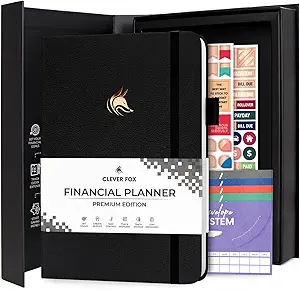
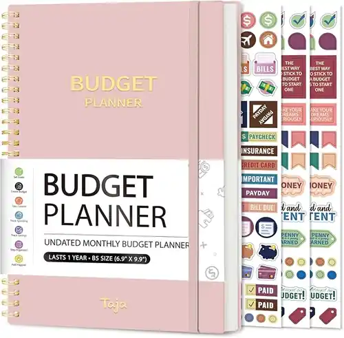

How to Stick to a Budget Without Stress (A Simple System That Actually Works)
💡 Quick Answer: How to Stick to a Budget
- ✔️ Use a simple budgeting system you can follow consistently
- ✔️ Set clear spending limits for each category
- ✔️ Save money first before spending on anything else
- ✔️ Track your expenses regularly to stay aware
- ✔️ Cut unnecessary costs that don’t add value
- ✔️ Control impulse spending with habits like waiting before buying
- ✔️ Automate savings and review your budget frequently
Bottom line: Keep it simple, stay consistent, and adjust when needed; not perfect.

📘 In This Guide 👇
- Introduction to Best Budgeting Concepts
- What Is the 50/30/20 Budget Rule?
- What Makes a Budgeting Method Ideal for Beginners?
- The Structure of the 50/30/20 Rule
- How to Use the 50/30/20 Rule (Practical Beginner Guide)
- Why the 50/30/20 Rule Wins for Beginners
- Pros and Cons of the 50/30/20 Budget Rule
- How It Compares to Other Budgeting Methods
- What If You Can’t Reach 20% Savings Yet?
- Beginner Budget Examples (Simple Breakdown)
- Who Might Need a Different System?
- Why This Method Builds Long-Term Financial Discipline
- Is the 50/30/20 Rule the Best Budgeting Method for You?
- Frequently Asked Questions
- Final Thoughts: Keep Budgeting Simple and Sustainable
Introduction to Sticking to a Budget for Beginners
Sticking to a budget isn’t just about tracking expenses; it’s about building a system that gives you control over your money, strengthens financial discipline, and ensures your spending aligns with your long-term goals.
The truth is, most people don’t struggle with budgeting because they lack willpower. They struggle because their budget is too rigid, overly detailed, or simply unrealistic for their daily lives. When a budget feels restrictive or disconnected, it becomes almost impossible to maintain.
This guide reveals practical, proven strategies to help you stick to a budget that actually works in real life, so you can stay consistent, reduce financial pressure, and take full control of your finances without feeling deprived or overwhelmed.
Learn how to create a monthly budget step by stepWhat It Really Means to Stick to a Budget
Sticking to a budget is not about micromanaging every expense or eliminating everything you enjoy. It’s about creating a sustainable financial system that keeps your spending intentional and aligned with your goals.
At its core, effective budgeting means:
- Spending within clearly defined limits
- Saving consistently to build financial security
- Avoiding unnecessary or high-interest debt
- Maintaining long-term control over your finances
A well-structured budget should function as a strategic decision-making tool; not a restriction. When designed correctly, it empowers you to make smarter financial choices with confidence while still enjoying the lifestyle you value.
This guide is based on proven budgeting systems used by financial counselors, nonprofit credit agencies, and long-term savers around the world.
At SmartMoneyTrek, we focus on practical personal finance systems designed for real people, especially those building stability from limited income.
Start With Clear Financial Goals
Before you create a budget, define a purpose strong enough to sustain your commitment over time. A vague intention like “spend less” lacks direction and rarely leads to lasting results. Clear financial goals, on the other hand, give your budget structure, focus, and measurable outcomes.
Strong, purpose-driven goals may include:
- Accelerating debt repayment to reduce financial burden
- Building a reliable emergency fund for unexpected expenses
- Saving strategically for major purchases or life milestones
- Working toward long-term financial independence and stability
When your budget is anchored to a specific and meaningful objective, it becomes more than a plan; it becomes a disciplined system that guides your decisions, strengthens consistency, and keeps you focused on achieving real financial progress.
Saving money works best when you are tracking every dollar with a zero-based budget.
Step-by-Step Process for Sticking to a Budget
Step 1: Understand Your Current Spending
A successful budget starts with accurate financial awareness. Building a budget on assumptions often leads to gaps, overspending, and inconsistency. To create a system that works, you need a clear picture of how your money is actually being spent.
How to Audit Your Spending Effectively
- Review recent bank statements and transaction history
- Categorize expenses (e.g., housing, food, transport, subscriptions)
- Separate essential expenses from discretionary spending
- Identify recurring charges or subscriptions that add little value
This financial audit provides the insight needed to make informed decisions. By understanding your spending patterns, you can eliminate waste, optimize your budget, and create a more realistic plan that supports long-term financial stability.
Step 2: Choose a Budgeting Method That Fits Your Lifestyle
An effective budget isn’t about following a perfect system; it’s about choosing a method you can realistically maintain over time. The most successful budgeting strategies are simple, flexible, and aligned with your income, spending habits, and financial goals.
Percentage-Based Budget (Simple and Sustainable)
One of the most widely used and beginner-friendly budgeting methods is the percentage-based approach, often structured as:
- 50% → Essential expenses (housing, food, utilities, transportation)
- 30% → Lifestyle spending (entertainment, dining, personal expenses)
- 20% → Savings or debt repayment
This method provides clear financial boundaries without unnecessary complexity. It helps you balance spending and saving efficiently while maintaining enough flexibility to adapt to real-life financial situations; making it easier to stay consistent in the long run.
If your fixed expenses feel too high, learn how to reduce monthly expenses without sacrificing essentials.
Not sure where to start? Our guide on ways to grow your savings over time
If you don’t yet have a simple tracking system, follow our complete beginner budgeting guide to see where your money is leaking and how to plug those holes.
What is the 50/30/20 rule in simple terms?
The 50/30/20 rule is a budgeting method that splits your income into needs (50%), wants (30%), and savings (20%). It helps you manage money easily without tracking every expense.
Is the 50/30/20 rule the best budgeting method for beginners?
Yes, the 50/30/20 rule is one of the best budgeting methods for beginners because it is simple, flexible, and easy to follow without detailed financial planning.
How do I start the 50/30/20 rule?
To start, calculate your after-tax income, divide it into the three categories, and adjust your spending so it fits within the 50/30/20 percentages.
What if I can’t save 20% of my income?
If saving 20% is difficult, start with a lower percentage like 10% and increase it gradually as your income grows or expenses decrease.
Why the 50/30/20 Rule Wins for Beginners
1. It Reduces Decision Fatigue
Traditional budgeting often demands constant micro-decisions:
- “How much should I allocate for groceries?”
- “Are my subscriptions getting out of hand?”
- “Did I overspend in my entertainment subcategory?”
Over time, this level of detail becomes mentally exhausting. The more decisions you have to make, the easier it is to feel overwhelmed and eventually give up.
The 50/30/20 rule removes that complexity, making it a practical budgeting system that beginners can follow without constant stress.
Does this expense fall under Needs, Wants, or Savings?
That clarity reduces decision fatigue. And when budgeting feels simpler and less stressful, you’re far more likely to stick with it. Consistency not perfection is what drives real financial progress.
2. It Balances Discipline and Flexibility
Some budgeting systems are overly rigid. Others are so loose that they provide little real guidance.
The 50/30/20 method strikes a healthy balance between the two.
It offers enough structure to prevent financial chaos, yet enough flexibility to adapt to real life. You’re guided by clear percentages, but you’re not trapped by dozens of restrictive rules.
If your income increases, the percentages scale automatically, meaning your savings grow along with your earnings.
If your expenses shift, you can adjust within each category without rebuilding your entire budget.
In other words, the system is firm but forgiving. It provides direction without pressure and that balance is what makes it sustainable over time.
3. It Prevents Burnout
When starting out, many beginners fall into one of two extremes:
- They save nothing at all.
- Or they try to save 40–50% immediately, feel overwhelmed and quit within weeks.
Both approaches are unsustainable.
The 50/30/20 rule avoids these extremes by creating steady, realistic momentum. Saving 20% is ambitious enough to make meaningful progress, yet balanced enough to maintain alongside everyday living.
It promotes progress without pressure. Growth without burnout.
And in personal finance, consistency will always outperform short bursts of intensity. Small, steady actions repeated over time build far stronger results than aggressive efforts that can’t be maintained.
4. It Works at Almost Any Income Level
If your income is currently limited, consider increasing it with realistic side income ideas for beginners.
Whether someone earns $800 or $8,000 per month, the percentages remain the same only the amounts change.
That built-in scalability makes the 50/30/20 rule universally practical. It adjusts naturally to different income levels without requiring a completely new system.
Because it’s based on proportions rather than fixed figures, the method works for students, young professionals, families, and high earners alike.
In the end, it’s not income-dependent, it’s behavior-dependent. And strong financial behavior, applied consistently at any income level, is what drives lasting stability and growth.
Pros and Cons of the 50/30/20 Budget Rule
Pros
- Simple and beginner-friendly
- No complex tracking required
- Builds consistent saving habits
- Flexible and adaptable to different incomes
Cons
- May not work well with very low income
- Less detailed than advanced budgeting systems
- Requires discipline to stick to percentages
Choose the Right Budgeting Tool for Your Style
| Product | Best For | Ease of Use | Action |
|---|---|---|---|
| Budget Planner Book | Beginners | Very Easy | View |
| Envelope System Kit | Spending Control | Easy | Check Price |
| Budget Binder | Full Organization | Moderate | View |
How It Compares to Other Budgeting Methods
Other budgeting systems aren’t bad, many are detailed and effective. The difference is that they often require more time, stricter tracking, and greater discipline.
For beginners, that level of complexity can feel overwhelming and difficult to sustain. The challenge isn’t that these systems don’t work, it’s just that they demand more effort than most people are ready to commit at the start.

Zero-Based Budgeting
In this approach, every dollar is given a specific role before the month even begins. Nothing is left unassigned; each amount is intentionally directed toward a defined purpose.
The method is highly detailed and can be extremely effective for maintaining tight financial control. However, for beginners, the level of planning and ongoing tracking required can feel time-consuming and mentally demanding.
While powerful, it often requires more structure and commitment than someone just starting out may be ready to manage.
Envelope System
This method uses physical cash envelopes for different spending categories. Each envelope holds a fixed amount, and once the cash is gone, spending in that category stops.
It can be especially powerful for people who struggle with overspending, as physically seeing and handling cash creates strong spending awareness and discipline.
However, in today’s digital-payment world where most transactions happen through cards, transfers, and online platforms, maintaining a strictly cash-based system can be inconvenient and harder to manage consistently.
Aggressive Savings Models
This approach is designed to accelerate wealth building as quickly as possible. It often encourages aggressive saving and strict spending limits, which can be highly motivating for those ready to move fast.
However, at the beginner stage, such intensity can feel unrealistic and difficult to sustain. When expectations are too high too soon, frustration can replace motivation.
For most people starting their financial journey, simplicity is more powerful than perfection. A system that is easy to follow and maintain will always outperform one that looks impressive but proves exhausting over time.
If you’re starting from zero, read our guide to building savings from zero to strengthen your financial foundation.
Budgeting Methods Comparison Table
| Method | Complexity | Best For | Beginner Friendly? |
|---|---|---|---|
| 50/30/20 Rule | Low | Balanced financial growth | Yes |
| Zero-Based Budgeting | High | Detailed expense control | Moderate |
| Envelope System | Medium | Overspending control | Yes (Cash users) |
For those who prefer more precision and control, zero-based budgeting assigns every dollar a specific purpose.
High monthly bills often lead to debt. If that’s your situation, visit our how to reduce debt and stop high interest payments eating your income.
What If You Can’t Reach 20% Savings Yet?
That’s completely normal.
If your current breakdown looks like:
- 60% Needs
- 30% Wants
- 10% Savings
you’re not failing, you’re building awareness and discipline.
Financial progress rarely begins with perfect numbers. It begins with understanding where you stand. From there, you can make gradual adjustments as your income increases or your expenses decrease.
Start where you are. Improve step by step.
The objective isn’t instant perfection. It’s steady, sustainable improvement that compounds over time.
If your income is tight, learn realistic ways to increase your income so you can improve your savings rate.Beginner Budget Examples (Simple Breakdown)
Let’s assume your monthly take-home income is $1,000.
Using the 50/30/20 framework, it would be allocated as follows:
- $500 → Needs
- $300 → Wants
- $200 → Savings
Likewise, if you earn $2,000 monthly:
- $1,000 → Needs
- $600 → Wants
- $400 → Savings
Rather than monitoring 15 or 20 separate spending categories, your focus is simply to ensure each major bucket stays within its limit.
This approach provides clear financial boundaries without overwhelming detail. You maintain structure and direction, but without the pressure of constant micro-tracking.
It’s disciplined, yet manageable. Structured, but not suffocating.
Who Might Need a Different System?
The 50/30/20 rule isn’t perfect for every situation.
It may be less suitable if:
- Your income fluctuates significantly from month to month
- Your essential expenses already consume 70% or more of your income
- You’re carrying high-interest debt that requires an aggressive repayment plan
In these cases, a more customized or temporary strategy may be necessary to stabilize your finances first.
However, for the average beginner seeking clarity, structure, and better control over their money, this method provides a strong and practical starting point. It simplifies decision-making, encourages balanced progress, and builds foundational financial habits that can be refined over time.
Why This Method Builds Long-Term Financial Discipline
Budgeting isn’t about restriction, it’s about awareness. It’s about knowing where your money goes and making intentional choices that align with your priorities.
The 50/30/20 rule is effective because it focuses on what truly matters. It:
- Simplifies everyday money decisions
- Encourages saving as a built-in habit
- Allows room for enjoyment without guilt
- Builds financial confidence step by step
Beginners don’t need complicated spreadsheets or rigid rules. They need a system that feels manageable and sustainable.
Because real progress doesn’t come from short bursts of discipline, it comes from momentum. And momentum is built through a method you can consistently follow beyond the first 30 days.
Learn More on SmartMoneyTrek
Explore our core financial guides:
- Save Money – proven ways to cut bills and build savings
- Budgeting – Tools and strategies to control your money
- Make Money – real side hustles and income ideas
- Loans & Debt – How to borrow wisely and eliminate debt
Is the 50/30/20 Rule the Best Budgeting Method for You?
If you're new to personal finance, this percentage-based budgeting strategy provides structure without complexity. It teaches balance, builds savings automatically, and prevents burnout.
For most beginners, it is the best budgeting method to start with because it prioritizes sustainability over perfection.
Frequently Asked Questions
Yes. It is simple, flexible, and easy to maintain without complex tracking.
This is common. Focus on gradual adjustments and increasing income where possible.
Yes. The 50/30/20 rule is a guideline, not a strict law.
Yes, but adjustments may be necessary. If essential expenses exceed 50%, you can temporarily use a 60/30/10 split while working to increase income or reduce costs.
For beginners, the 50/30/20 rule is easier to maintain because it focuses on broad categories rather than assigning every dollar a specific job.
Build a Complete Budgeting System That Scales
If you're ready to take full control of your finances, these systems combine tracking, planning, and goal-setting into one structured approach.

✔ Savings + expense tracking
✔ High discipline tool

✔ Long-term tracking
✔ Better financial clarity
Final Thoughts: Keep Budgeting Simple and Sustainable
The best budgeting method for beginners isn’t the most detailed or sophisticated.
It’s the one you can understand today and still be confidently using six months from now without feeling overwhelmed.
The 50/30/20 rule delivers that balance. It provides:
- Structure without rigidity
- Discipline without burnout
- Simplicity without confusion
It gives you a clear starting point without unnecessary complexity.
Start here.
Build the habit.
Refine as you grow.
Ready to Apply This Budgeting Method?
Learn how to create a simple monthly budget step by step and start organizing your income today. Create Your Monthly Budget
Your financial journey doesn’t need to begin with perfection. It simply needs to begin with consistency, because consistent action, over time, is what turns small steps into lasting progress.
This content is for educational purposes only and does not constitute financial advice.
This page may contain affiliate links. We may earn a commission at no extra cost to you.